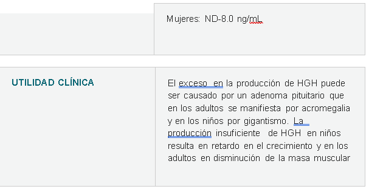
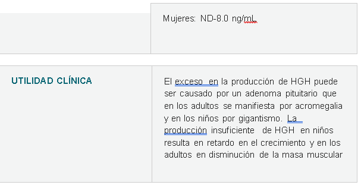

PATRÓN DE SECRECIÓN
La secreción espontánea de GH es pulsátil. Los intervalos entre los pulsos varían según las especies, y son aproximadamente de 2 hs en humanos y de 3 hs en ratas. El patrón de secreción de GH depende de la interacción finamente regulada de la GHRH (Hormona hipotalámica liberadora de la hormona de crecimiento) con la SS (somatostatina) en las células somatotropas, es decir que tanto la GHRH como la SS son requeridas para la secreción pulsátil de GH. El patrón secretor de GH es sexualmente dimórfico; los machos exhiben pulsos mayores. El patrón es influenciado por andrógenos y estrógenos: mientras que los primeros regulan la amplitud del pulso, los estrógenos, regulan la secreción basal. En humanos, un pico en la secreción de GH se observa asociado al sueño profundo y el 70% de la secreción de GH ocurre durante la noche.
*Explicacion de la imagen
la GH es mínima durante el día pero aumenta durante la noche esto es porque por lo general las personas duermen en la noche. Este ritmo se rige por patrones de sueño, si un niño no duerme en la noche pero duerme 8 horas en el día si va a secretar la GH. Su secreción es pulsátil es decir, existen ciertos picos a lo largo del día que ayudan a que se produzca la GH, el más importante de ellos es el ejercicio agotador donde la adenohipófisis secreta la GH. El ayuno, la hipoglucemia, alimentos ricos en proteína también son estímulos que aumentan la secreción. Por el contrario también existen estímulos que disminuyen la secreción de GH como la glucosa, el cortisol y ácidos grasos libres.
MUESTRA : Hormona del crecimiento
 
